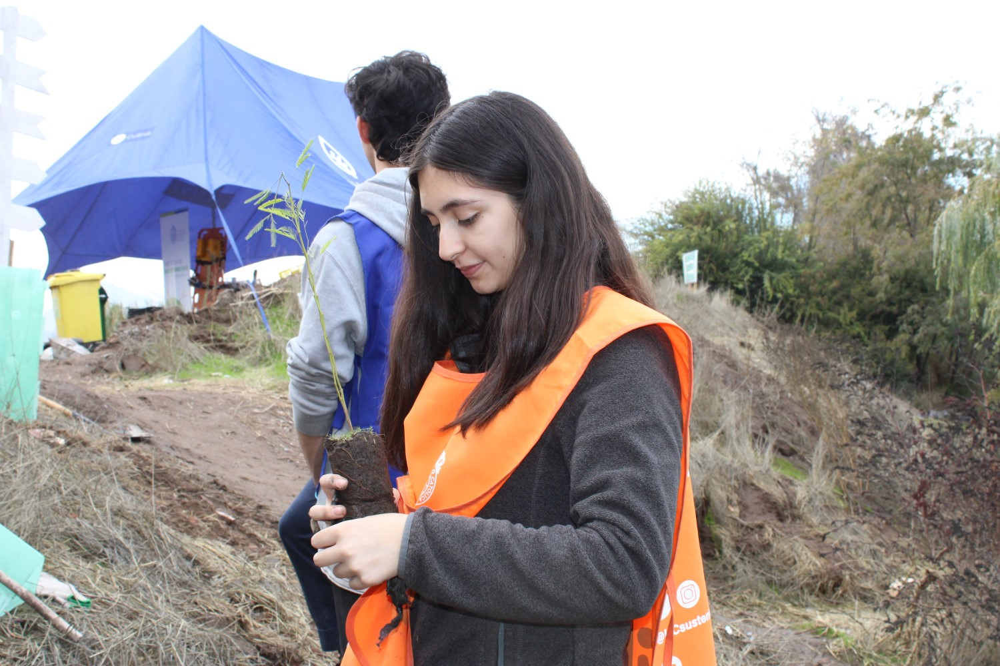

danitza.sandrock@uc.cl | +56 9 5711 0680 | Santiago, Chile
Soy una estudiante de periodismo que actualmente está cursando su segundo año de carrera. Tengo un interés por el cuidado medioambiental y las relaciones internacionales, ademas de que intento ser lo mas proactiva posible sin dejar ninguna de mis responsabilidades en segundo plano. Mis deseos en cuanto a lo profesonal es poder seguir expandiendome en areas de mi interes y tener la posibilidad de explorar y aprender de las oportunidades que se me ofrecen para enriquecer
Miembro de ECOS (Marzo 2024 - Agosto 2024)
Desarrollé en conjunto a otras personas un proyecto de sustentabilidad para la univerisdad llamado "Ecosia On Campus"
Miembro de Mai Buddy (Marzo 2024 - Julio 2024)
Estuve ayudando, apoyando y saliendo con un estudiante de intercambio con el fin de resolver dudas sobre la cultura y de esta manera que se pudiera adaptar de forma sencilla a la universidad
Miembro de EA (Abril 2024 - presente)
Me encuentro realizando secciones del programa en donde hablo diversidad de temas relacionados a la cultura asiatica
Participacion ( 23 y 24 de octubre 2024)
Fui miembro de la cobertura de la segunda vuelta de las elecciones FEUC desempeñando el papel de editora de boletines
Miembro de la agencia de publicidad (Abril 2024 - presente)
Participo en la creacion de campañas publicitarias y concursos
Enseñanza media completa (2019 - 2022)
Licenciatura en comunicación social (2023 - Presente)
Puedes conocer más sobre mi perfil profesional en LinkedIn.